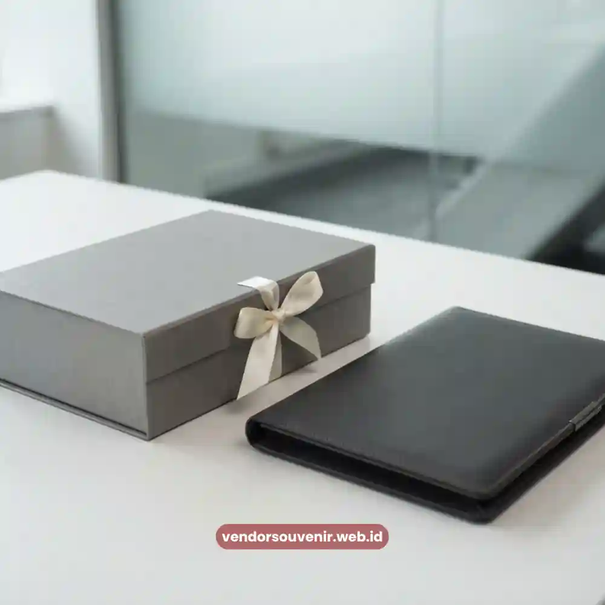

Daftar Isi
Etika pemberian hampers kepada klien mencakup kepatuhan terhadap batasan nilai hadiah, kesesuaian dengan kebijakan gratifikasi perusahaan, serta ketepatan waktu dan cara penyampaian agar tidak menimbulkan kesalahpahaman profesional.
Memperhatikan aspek etika ini penting agar pemberian hampers tetap dipandang sebagai bentuk apresiasi yang wajar, bukan sebagai upaya memengaruhi keputusan bisnis secara tidak pantas.
Perusahaan yang menjalankan praktik pemberian hampers secara etis umumnya lebih dipercaya oleh klien maupun mitra kerja lainnya.
Mengapa Etika Bisnis Penting dalam Pemberian Hampers kepada Klien?
Etika bisnis penting dalam pemberian hampers karena menyangkut reputasi dan integritas perusahaan di mata klien maupun publik secara luas.
Pemberian hadiah yang tidak memperhatikan batasan etika berpotensi menimbulkan persepsi negatif, bahkan dapat disalahartikan sebagai bentuk gratifikasi yang melanggar kebijakan internal klien, terutama pada klien dari sektor pemerintahan atau perusahaan dengan kebijakan anti-korupsi yang ketat.
Dengan memperhatikan etika secara konsisten, perusahaan dapat memastikan bahwa hampers benar-benar diterima sebagai bentuk apresiasi yang tulus.
Apa Batasan Nilai dan Kebijakan Gratifikasi yang Perlu Diperhatikan?
Sebagian besar organisasi, terutama instansi pemerintah dan perusahaan besar, memiliki kebijakan internal terkait batas nilai hadiah yang boleh diterima oleh karyawannya dari mitra bisnis.
Sebelum mengirimkan hampers, perusahaan pengirim sebaiknya memahami secara umum bahwa kebijakan semacam ini berbeda antar organisasi, sehingga penyesuaian nilai dan bentuk hampers perlu dilakukan secara bijak agar tidak menimbulkan masalah bagi pihak penerima.
Kehati-hatian dalam memperhatikan batasan ini menunjukkan bahwa perusahaan pengirim menghormati aturan dan integritas yang dijunjung oleh klien, sekaligus menjaga hubungan bisnis tetap berada dalam koridor yang profesional dan sehat.
Bagaimana Kesesuaian Budaya Memengaruhi Pemilihan Hampers untuk Klien?
Kesesuaian budaya turut memengaruhi bagaimana hampers dimaknai oleh klien.
Latar belakang budaya, keyakinan, maupun kebiasaan tertentu dapat memengaruhi jenis produk yang dianggap pantas atau kurang pantas untuk diberikan.
Memperhatikan aspek ini menunjukkan kepekaan perusahaan terhadap keberagaman klien, sekaligus menghindari kesalahpahaman yang dapat merusak hubungan bisnis yang telah terjalin dengan baik.
Bagaimana Etika Waktu dan Cara Penyampaian Hampers kepada Klien?
Selain nilai dan jenis produk, etika juga mencakup waktu dan cara penyampaian hampers.
Pengiriman hampers sebaiknya dilakukan melalui jalur resmi dan disertai keterangan yang jelas mengenai maksud pemberian, guna menghindari kesan tersembunyi atau tidak transparan.
Penyampaian yang terbuka dan profesional membantu memastikan bahwa hampers diterima sebagai bentuk apresiasi yang wajar, bukan sebagai tindakan yang berpotensi disalahartikan.

Ilustrasi Hampers Kebijakan Korporat Formal
Bagaimana Menjaga Profesionalisme melalui Hampers yang Proporsional?
Profesionalisme dalam pemberian hampers dapat dijaga dengan memastikan bahwa nilai dan bentuk hampers proporsional terhadap konteks hubungan bisnis, tidak berlebihan, namun tetap mencerminkan penghargaan yang tulus.
Pendekatan yang proporsional ini membantu perusahaan menghindari kesan berlebihan yang justru dapat menimbulkan ketidaknyamanan bagi klien, sekaligus menjaga kesan positif yang ingin disampaikan.
Hampers Malang memahami pentingnya aspek etika dalam pemberian hampers korporat, sehingga tim kami siap membantu perusahaan Anda berkonsultasi mengenai bentuk dan nilai hampers yang sesuai dengan konteks bisnis dan kebijakan klien Anda.
Memberikan hampers kepada klien tidak lepas dari tanggung jawab menjaga etika dan profesionalisme bisnis. Perhatian terhadap batasan nilai, kesesuaian budaya, serta cara penyampaian yang transparan menjadi kunci agar apresiasi yang diberikan tetap dipandang positif oleh klien.
Konsultasikan kebutuhan hampers korporat perusahaan Anda bersama Hampers Malang, dan pastikan setiap hampers yang dikirimkan mencerminkan profesionalisme sekaligus ketulusan apresiasi bisnis Anda.

Pilihan Souvenir Perusahaan dari Vendor Terpercaya
Siap Memesan Hampers untuk Klien Anda?
Kami siap membantu menyiapkan hampers profesional terbaik sesuai kebutuhan dan etika korporat perusahaan Anda.
Konsultasikan desain custom dan jadwal pengiriman Anda sekarang juga.
Dapatkan penawaran harga terbaik!
Maroon Souvenir
Partner Corporate Gift terpercaya di Indonesia. Berpengalaman melayani ratusan perusahaan sejak 2018.
Lihat Portofolio Kami